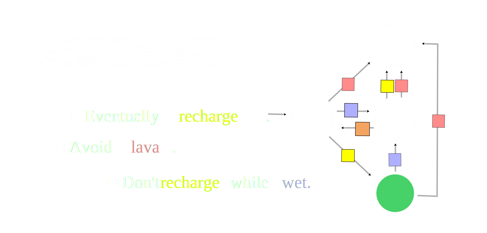
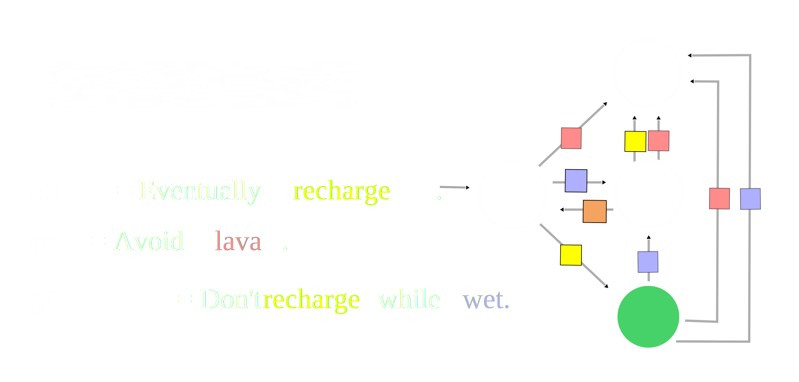
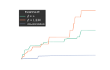
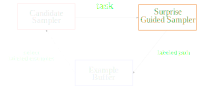
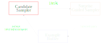
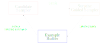
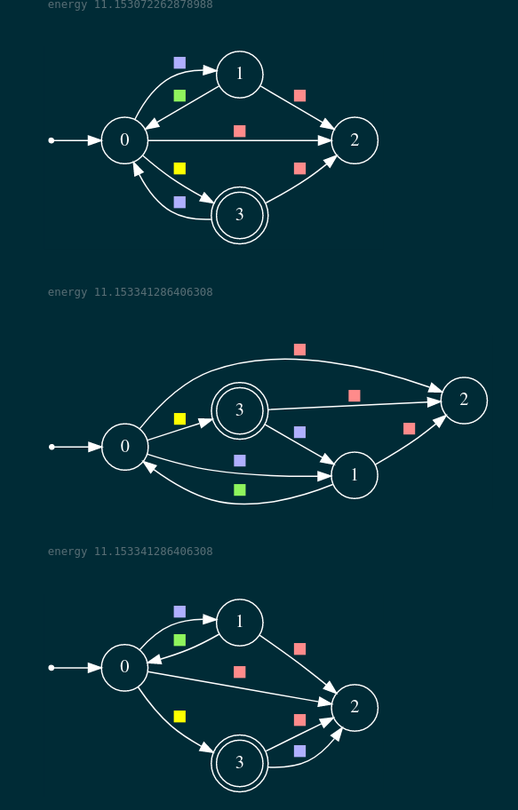
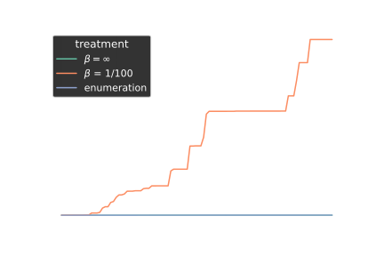
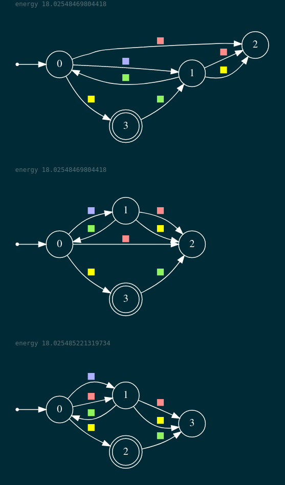

Many important domains benefit from goal inference.
Partial Communication through actions
Partial Communication through actions
Legible actions can be incredibly diagnostic.
Dragan, et al, "Legibility and predictability of robot motion." HRI `13.
Actions influence other agents.
Sadigh, et al. "Planning for autonomous cars that leverage effects on human actions." RSS `16.
Essential for interpreting other signals: (Language, Disengagments, Other agents)
Goodman, et al. "Pragmatic language interpretation as probabilistic inference." TiCS `16
McPherson, et al. "Modeling supervisor safe sets for improving collaboration in human-robot teams." IROS `18
Afolabi, et al. "People as sensors: Imputing maps from human actions." IROS `18.
Consider an agent acting in the following
stochastic grid world.
Can try to move up, down, left, right
May slip due to wind
What is the agent trying to do?
Probably trying to reach yellow tiles
Although these actions are surprising under that hypothesis
And isn't it easier to go to this yellow tile any way?
Goal: Systemize analysis to learn tasks
Demonstration Informed Specification Search
D.I.S.S.
Will explore inferring goals as Boolean specifications
Support composition.
Support describing temporal tasks.
Be semantically robust to changes in the dynamics.
Support boolean compositions
Support incremental learning
Don't need "wet" to describe dynamics
Can learn as state machine over state colors
Monolithic description

Easy to express variations

Contributions
Efficently learn finite trace properties from unlabeled and incomplete demonstrations in a Markov Decison
Process.

Support incremental and monolithic learning.
Only needs blackbox access to a MaxEnt planner and Concept Identifer..


Specification motivated agents
From demonstrations to specifications
Likelihood Calculation in Symbolic MDPs
Conclusion and future work
Dynamics Model
Assume some fixed sets of states and actions.
A trace, $\xi$, is a sequence of states and actions.
Assume maximum episode length of, \(\tau \in \mathbb{N}\).
Trace properties
A (Boolean) specification,
$\varphi$, is a set of traces.
We say $\xi$ satisfies $\varphi$,
if $\xi \in \varphi$.
A demonstration of a task
$\varphi$ is a possibly unlabeled and
incomplete example where
the agent tries to satisfy $\varphi$.
Trace properties derived from Formal Logic, Automata, etc
Will call a collection of trace properties a concept class.
Key idea 3: Toggle trace labels to manipulate pivot values.
Each pivot's subtree summarized by V
Each path given binary label by specification
Flipping value monotonically changes subtree value
$V_3 < V_3'$
Can sample from $\pi$ to generate high weight paths.
Surprise Guided Sampler
Fix a candidate spec and compute proxy gradient.
Define the pivot distribution, $D$ = softmax $\left (\frac{|\nabla \widehat{h}|}{\beta}\right)$.
Sample a pivot, $k \sim D$ and a path, $\xi$, using the $\pi_\varphi$ such that:
$\xi$ pivots at $k$.
$\nabla_i \widehat{h} > 0 \iff \xi \in \varphi$.
New label given by $\nabla_i \widehat{h} < 0$.
Candidate sampler can be any exact learner
Lifted in simulated annealing using example buffer

Demonstration Informed Specification Search
What is the agent trying to do?
Quickly finds high mass probability region
Top 3 DFAs found

DISS able to find high mass probability region

Top 3 DFAs found

In this talk
Max (causal) entropy forecasting of specification driven agents in MDPs and Stochastic Games
"Learning Task Specifications from
Demonstrations." NeurIPS `18.
"Maximum Causal Entropy
Specification Inference from
Demonstrations." CAV `20
"Entropy Guided Control
Improvisation", RSS `21
Searching for likely specifications given demonstrations
"Learning Task Specifications from
Demonstrations." NeurIPS `18.
"Demonstration Informed Specification Search." In progress.
By no means solved
Clear path to scaling up
Need a way to estimate values.
Need a way to sample likely paths from policy.
Plays nicely with approximate methods
Dynamic Programming
Dynamic Programming on compressed structure
Monte Carlo Tree Search (e.g., Smooth Cruiser [1])
Function Approximation (e.g., Soft Actor Critic [2])
Natural path for combining symbolic and MCTS methods
Dynamic Programming
Dynamic Programming on compressed structure
Monte Carlo Tree Search (e.g., Smooth Cruiser [1])
Function Approximation (e.g., Soft Actor Critic [2])
Maximum causal entropy correlated equillibria
seem like an interesting model
Ziebart, et al., "Maximum causal entropy correlated equilibria for Markov games." AAAI `10.